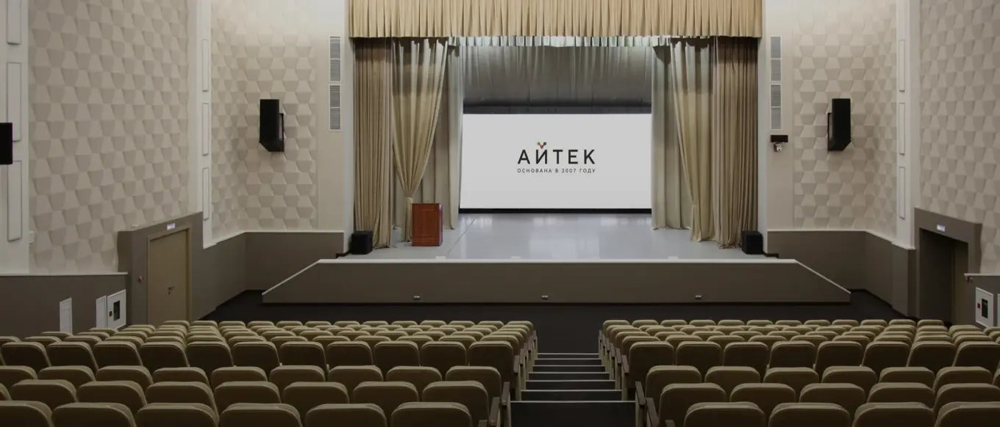

Федеральный исследовательский центр
Апатиты · 60 рабочих дней
Комплексное оснащение актового зала в городе Геленджик

Стоимость и срок указаны для этого объекта. Смета нового проекта зависит от помещения, комплектации и состава работ.
ГК Айтек поставили задачу: разработать и внедрить единый мультимедийный комплекс для оснащения актового зала. Оборудование должно обеспечивать проведение презентаций, деловых совещаний, пресс-конференций, учебных мероприятий и сеансов ВКС. Также необходимо предусмотреть возможность записи и трансляции событий в реальном времени, синхронный перевод выступлений и централизованное управление всей коммутацией и оборудованием из серверной комнаты.
Специалистами ГК Айтек был успешно завершён проект по комплексному оснащению объекта современным мультимедийным оборудованием под ключ. В ходе реализации проекта был произведён весь спектр работ — от поставки оборудования и разработки проектной документации до финальной отладки систем. Состав реализованного комплекса: Светодиодный экран 3,40 х 7,40м, шаг пикселя 4мм Концертные акустические системы, системы прострелов и сценических мониторов Интерактивная трибуна для выступлений спикера Системы для сурдоперевода Микрофонные системы для хорового и концертного выступления Театральное и профильное освещение сцены и зала Централизованное управление всем оборудованием с единого пульта
Зал площадью 400 кв. м оборудован амфитеатром и сценой. Из-за наличия сцены и яркого освещения требовался большой и яркий экран. Наши специалисты предложили три варианта на основе разных технологий: проектор с экраном, видеостена из ЖК-панелей и светодиодный экран. Исходя из бюджета и требований к качеству, заказчик выбрал светодиодный экран с высокой яркостью и разрешением.
Поскольку делегации располагаются на сцене, мы установили дополнительные экраны, чтобы им не приходилось поворачиваться к основному экрану.
Для удобства подключения внешних устройств и носителей на сцене установлена интерактивная трибуна с дисплеем, к которому можно подключать флешки. Эта трибуна позволяет делать пометки на презентациях, выделять важные места и выводить информацию на общие экраны.
Кроме того, предусмотрена возможность беспроводной передачи видеосигнала на экраны. Это позволяет нескольким участникам выводить изображение и вносить пометки поверх презентаций.
Для усиления речи делегатов на сцене и трибуне установлены настольные узконаправленные микрофоны. Участники совещания в зале используют ручные радиомикрофоны. Учитывая акустику помещения, мы установили несколько широкополосных активных корпусных громкоговорителей в передней части сцены и активные мониторы по всему периметру зала. Для полноты звучания под сценой установлены два активных низкочастотных громкоговорителя.
Для трансляции мероприятий как во внешнюю среду, так и в зоны наблюдения установлены две поворотные управляемые камеры: одна направлена на сцену, а вторая — в зал. Для удаленных конференций предусмотрена система ВКС, которая подключена к микрофонному и видеооборудованию.
Для возможности просмотра мероприятий вне зоны самого зала было предусмотрено несколько дублирующих панелей и два активных громкоговорителя.
Представляет собой небольшое пространство в несколько квадратных метров, из которого осуществляется управление всем оборудованием. Для объединения всего комплекса оборудования в единое коммутационное пространство была установлены специализированная рековая стойка. На столе оператора установили три монитора и пульт управления всеми камерами во всех помещениях. На основной монитор транслируется изображение со всех камер. Второй монитор используется в качестве основного источника отображения контента. Третий монитор используется для управления всей системой во всех залах.
Функциональные возможности системы позволяют выводить визуальную информацию с любого источника информации на любое отображающее устройство в любой из залов, как в виде одного изображения, так и в виде комплекса изображений, состоящего из нескольких изображений различных источников. Например, вывод изображения с камеры, ноутбука и usb накопителя в единое изображение на любое из отображающих устройств в любом из залов. Осуществлена возможность редактирования изображения в реальном времени с поддержкой вставки живого текста или анимации.
Функционал данного комплекса позволяет гибко управлять всем звуком во всех залах. Например, возможно вывести звук с интерактивной трибуны одного зала в другой зал и наоборот, управлять громкостью в любом из помещений и многое другое. Осуществлена возможность записи мероприятий одновременно проходящих в двух залах.
Пространство залов превратилось в многофункциональный мультимедийный комплекс, в котором можно проводить любые мероприятия, начиная от проведения простых мультимедийных презентаций и заканчивая проведением концертных мероприятий. Установленный комплекс оборудования позволяет выводить графические изображения любого формата в сочетании с качественным звуковым сопровождением. Все управление оборудованием осуществляется в серверной комнате с помощью одного интерактивного компьютера. Срок реализации проекта составил 3 месяца.
В бриф перейдут выбранный проект, тип помещения и бюджет примера. Все параметры можно изменить.